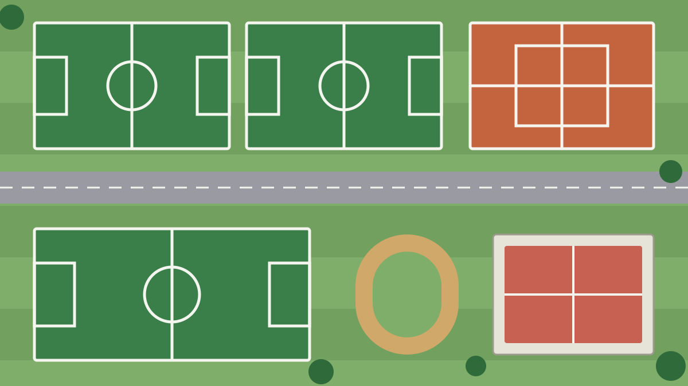

Football
FootballOkafor’s 89th-minute header sends Thamesbank FC top of the table
A stoppage-time scramble at Millwood Road settles a ferocious derby against Hackney Wanderers.
FootballA stoppage-time scramble at Millwood Road settles a ferocious derby against Hackney Wanderers.

Lena Voss shaved 41 seconds off the women’s record on a crisp autumn Sunday.
More than 200 crews are entered for Saturday’s race over the 4.25-mile course.

A £4.2m package will replace waterlogged grass with floodlit 3G surfaces in six boroughs.
| # | Club | P | GD | Pts |
|---|---|---|---|---|
| 1 | Thamesbank FC | 11 | +14 | 26 |
| 2 | Hackney Wanderers | 11 | +9 | 25 |
| 3 | Lewisham Lions | 11 | +6 | 22 |
| 4 | Camden Rovers | 11 | +2 | 19 |
| 5 | Peckham Town | 11 | −1 | 16 |